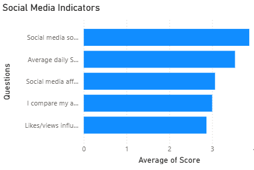
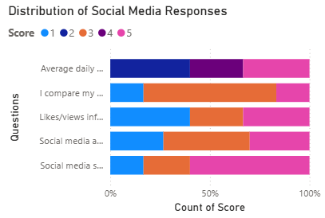
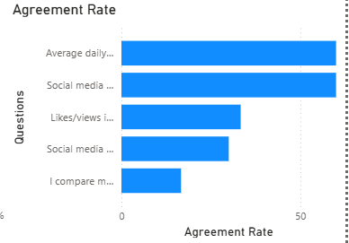

Scrolling Through Success
Understanding Social Media Influence Among Students

Hook
The notification appears on the screen.
A friend has posted an internship announcement.
Another has shared an offer letter.
Someone else uploads a photograph with a caption celebrating a new opportunity.
For most people, the interaction lasts only a few seconds.
A scroll.
A like.
A brief moment of attention.
And then it is gone.
Or at least that is how it appears.
For many students, social media has become more than a platform for entertainment or communication.
It has become a place where success is displayed, progress is measured, and comparisons happen almost automatically.
The question is no longer whether students use social media.
The question is how social media shapes the way students see themselves.
Research Question
How does social media influence students' perceptions of success, achievement, and self-evaluation?
Methodology
To explore this question, a survey was conducted among 30 students using five social-media-related indicators.
Students responded to questions regarding social media usage, online comparison, feelings of falling behind, engagement metrics such as likes and views, and perceptions of personal success.
Responses were analyzed using a five-point scale and visualized through Power BI dashboards to identify patterns in how social media influences student experiences and self-perception.
Finding 1: Social Media Is Part of Everyday Student Life

Figure 1. Social Media Indicators
The findings suggest that social media occupies a significant place in students' daily routines.
Students reported regular usage and moderate to high levels of influence from online content, resulting in a Social Media Influence Index of 3.0 out of 5.
While social media is often discussed as a source of entertainment, the data suggests it also functions as a source of information about what peers are doing, achieving, and experiencing.
Every internship announcement, project showcase, certification post, or placement update becomes part of a larger stream of information that students consume daily.
Unlike previous generations, students are no longer exposed only to their own progress.
They are constantly exposed to everyone else's as well.
Finding 2: Success Becomes Easier to Compare Than Effort

Figure 2. Agreement Rate by Questions
One of the strongest themes emerging from the survey was comparison.
Many respondents reported comparing their achievements with those of people they encounter online.
This finding reflects an important reality of social media platforms.
People rarely post uncertainty.
They post outcomes.
The finished project.
The internship confirmation.
The offer letter.
The achievement.
As a result, students often compare their behind-the-scenes struggles with someone else's highlight reel.
The comparison is rarely fair.
Yet it happens naturally.
The survey suggests that social media does not create insecurity on its own.
Instead, it amplifies existing doubts by placing them next to visible examples of success.
The result is a constant question that many students quietly ask themselves:
"Am I doing enough?"
Finding 3: The Influence Extends Beyond the Screen

Figure 3. Distribution of Social Media Responses
The influence of social media appears to extend beyond scrolling habits.
Students reported that likes, views, and online engagement can affect how they feel about the content they post and, in some cases, how successful they perceive themselves to be.
This finding highlights an important shift.
Achievement is no longer experienced only through personal satisfaction.
It is increasingly experienced through visibility.
When recognition becomes public, self-evaluation can become public too.
A post that performs well may provide validation.
A post that receives little engagement may create disappointment.
The platform becomes more than a communication tool.
It becomes a feedback system.
And feedback systems have a powerful influence on human behavior.
Student Voices
Although their experiences differ, a common feeling emerges: social media rarely creates new insecurities.
Instead, it magnifies existing ones.
The platform may show achievements.
But what students often experience is comparison.
Analysis and Interpretation
The story emerging from the data is not about technology.
It is about perception.
Human beings naturally evaluate themselves relative to those around them. Social media simply expands the number of people included in that comparison.
Students are no longer comparing themselves with a few classmates.
They are comparing themselves with hundreds of carefully curated success stories appearing on their screens every day.
The challenge is not that success is visible.
The challenge is that struggle is often invisible.
When students repeatedly see outcomes without seeing the effort, setbacks, failures, and uncertainty that came before them, success can begin to look effortless.
And when success appears effortless, personal struggles can begin to feel like personal shortcomings.
The data suggests that social media influences not only what students see.
It influences how they interpret themselves.
Conclusion
The findings suggest that social media plays a meaningful role in shaping how students evaluate success, progress, and self-worth.
Students reported regular engagement with social media and acknowledged its influence on comparison, personal achievement, and self-perception.
Many respondents indicated that online content affects how they view their own progress, while engagement metrics such as likes and views continue to influence feelings of validation and recognition.
The most important finding is not that students spend time on social media.
It is that social media has become one of the places where students construct their understanding of success itself.
For today's students, the challenge is not simply managing screen time. It is learning to separate personal growth from the endless stream of achievements appearing on the screen in front of them.